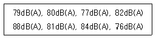
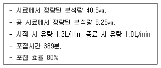
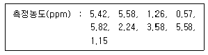
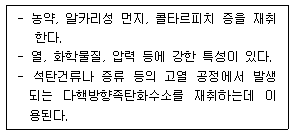
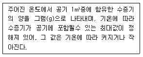

산업위생관리기사 (2014-08-17 기출문제)
1과목: 산업위생학개론
1. 다음 중 산업위생의 기본적인 과제에 해당하지 않는 것은 무엇인가?
- 노동 재생산과 사회 경제적 조건의 연구
- 작업능률 저하에 따른 작업조건에 관한 연구
- 작업환경의 유해물질이 대기오염에 미치는 연구
- 작업환경에 의한 신체적 영향과 최적환경의 연구
(정답률: 70%)

2. 다음 중 바람직한 교대제에 대한 설명으로 바르지 않은 것은?
- 2교대시 최저 3조로 편성한다.
- 각 반의 근무시간은 8시간으로 한다.
- 야간근무의 연속일수는 2~3일로 한다.
- 야근 후 다음 반으로 가는 간격은 24시간으로 한다.
(정답률: 83%)
3. 사업장에서 근로자가 하루에 25kg 이상의 중량물을 몇 회 이상 들면 근골격계 부담작업에 해당되는지 고르시오.
- 5회
- 10회
- 15회
- 20회
(정답률: 75%)
4. 50명의 근로자가 사업장에서 1년 동안에 6명의 부상자가 발생하였고 총 휴업일수가 219일이라면 근로손실일수와 강도율은 각각 얼마가 되겠는가? (단, 연간근로시간수는 120000시간이다.)
- 근로손실일수 : 180일, 강도율 : 1.5일
- 근로손실일수 : 190일, 강도율 : 1.5일
- 근로손실일수 : 180일, 강도율 : 2.5일
- 근로손실일수 : 190일, 강도율 : 2.5일
(정답률: 70%)
5. 사무실 공기관리 지침에서 관리하고 있는 오염물질 중 포름알데히드(HCHO)에 대한 설명으로 바르지 않은 것은?
- 자극적인 냄새를 가지며, 메틸알데히드라고도 한다.
- 일반주택 및 공공건물에 많이 사용하는 건축자재와 섬유옷감이 그 발생원이 되고 있다.
- 시료채취는 고체흡착관 또는 캐니스터로 수행한다.
- 산업안전보건법상 사람에게 충분한 발암성 증거가 있는 물질(1A)로 분류되어 있다.
(정답률: 60%)
6. 작업대사율이 3인 중등작업을 하는 근로자의 실동률(%)을 계산하면 얼마인가?
- 50
- 60
- 70
- 80
(정답률: 68%)
7. 다음 중 산업안전보건법에 따른 사무실 공기질 측정대상 오염물질에 해당하지 않는 것은 무엇인가?
- 라돈
- 미세먼지
- 일산화탄소
- 총부유세균
(정답률: 56%)
8. 작업장에서 누적된 스트레스를 개인차원에서 관리하는 방법에 대한 설명이 잘못된 것은 무엇인가?
- 신체검사를 통하여 스트레스성 질환을 평가한다.
- 자신의 한계와 문제의 징후를 인식하여 해결방안을 도출한다.
- 명상, 요가, 선 등의 긴장 이완훈련을 통하여 생리적 휴식상태를 경험한다.
- 규칙적인 운동을 피하고, 직무외적인 취미, 휴식, 즐거운 활동 등에 참여하여 대처능력을 함양한다.
(정답률: 85%)
9. 산업위생 역사에서 영국의 외과의사 Percivall Pott에 대한 내용 중 바르지 않은 것은?
- 직업성 암을 최초로 보고하였다.
- 산업혁명 이전의 산업위생 역사이다.
- 어린이 굴뚝 청소부에게 많이 발생하던 음낭암(scrotal cancer)의 원인물질을 검댕(soot)이라고 규명하였다.
- Pott의 노력으로 1788년 영국에서는 “도제 건강 및 도덕법(Health and Mo- rals of Apprentices Act)"이 통과 되었다.
(정답률: 74%)
10. 다음 중 근육운동을 하는 동안 혐기성 대사에 동원되는 에너지원과 가장 거리가 먼 것은 무엇인가?
- 아세트알데히드
- 크레아틴인산(CP)
- 글리코겐
- 아데노신삼인산(ATP)
(정답률: 80%)
11. 온도 25℃, 1기압하에서 분당 100mL 씩 60분 동안 채취한 공기 중에서 벤젠이 3mg 검출되었다. 검출된 벤젠은 약 몇 ppm인가? (단, 벤벤의 분자량은 78이다.)
- 11
- 15.7
- 111
- 157
(정답률: 57%)
12. 주로 정적인 자세에서 인체의 특정부위를 지속적, 반복적으로 사용하거나 부적합한 자세로 장기간 작업할 때 나타나는 질환을 의미하는 것으로 바르지 않은 것은?
- 반복성긴장장애
- 누적외상성질환
- 작업관련성 근골격계질환
- 작업관련성 신경계질환
(정답률: 64%)
13. 다음 중 산업안전보건법상 대상화학물질에 대한 물질안전보건자료(MSDS)로부터 알 수 있는 정보가 아닌 것은 무엇인가?
- 응급조치요령
- 법적규제 현황
- 주요성분 검사방법
- 노출방지 및 개인보호구
(정답률: 68%)
14. 우리나라 고시에 따르면 하루에 몇 시간 이상 집중적으로 자료입력을 위해 키보드 또는 마우스를 조작하는 작업을 근골격계 부담작업으로 분류하는지 고르시오.
- 2시간
- 4시간
- 6시간
- 8시간
(정답률: 66%)
15. 다음 중 직업성 질환으로 가장 거리가 먼 것은 무엇인가?
- 분진에 의하여 발생되는 진폐증
- 화학물질의 반응으로 인한 폭발 후유증
- 화학적 유해인자에 의한 중독
- 유해광선, 방사선 등의 물리적 인자에 의하여 발생되는 질환
(정답률: 83%)
16. 미국산업위생학술원(AAIH)에서 정하고 있는 산업위생전문가로서 지켜야 할 윤리강령으로 바르지 않은 것은?
- 기업체의 기밀은 누설하지 않는다.
- 성실성과 학문적 실력 면에서 최고 수준을 유지한다.
- 쾌적한 작업환경을 만들기 위한 시설 투자 유치에 기여한다.
- 과학적 방법의 적용과 자료의 해석에 객관성을 유지한다.
(정답률: 87%)
17. 다음 중 안전보건교육에 관한 내용으로 바르지 않은 것은?
- 사업주는 당해 사업장의 근로자에 대하여 정기적으로 안전보건에 관한 교육을 실시한다.
- 사업주는 근로자를 채용할 때와 작업내용을 변경할 때는 당해 근로자에 대하여 당해 업무와 관ㄱ되는 안전보건에 관한 교육을 실시한다.
- 사업주는 유해하거나 위험한 작업에 근로자를 사용할 때에는 당해업무와 관계되는 안전보건에 관한 특별교육을 실시한다.
- 사업주는 안전보건에 관한 교육을 교육부장관이 지정하는 교육기관에 위탁하여 실시한다.
(정답률: 85%)
18. 다음 중 산업피로의 원인이 되고 있는 스트레스에 의한 신체반응 증상으로 올바른 것은?
- 혈압의 상승
- 근육의 긴장 완화
- 소화기관에서의 위산 분비 억제
- 뇌하수체에서 아드레날린의 분비 감소
(정답률: 61%)
19. 직업성 질환의 예방대책 중에서 근로자 대책에 속하지 않는 것은 무엇인가?
- 적절한 보호의의 착용
- 정기적인 근로자 건강진단의 실시
- 생산라인의 개조 또는 국소배기시설의 설치
- 보안경, 진동 장갑, 귀마개 등의 보호구 착용
(정답률: 88%)
20. 다음 중 재해예방의 4원칙에 해당하지 않는 것은 무엇인가?
- 손실 우연의 원칙
- 원인 조사의 원칙
- 예방 가능의 원칙
- 대책 선정의 원칙
(정답률: 82%)
2과목: 작업위생측정 및 평가
21. 음원의 파워레벨을 Lw(dB), 음원에서의 수음점까지의 거리를 r(m), 음원의 지향계수를 Q라 할 때 음압레벨 L(dB)은 L=Lw-20logr-11+10logQ로 나타낸다. Lw가 107dB일 때 r이 2m이고, L이 96dB 이었다면 음원의 지향계수는 무엇인가?
- 1
- 2
- 3
- 4
(정답률: 54%)
22. 가스상 물질 흡수액의 흡수효율을 높이기 위한 방법으로 올바르지 않은 것은?
- 가는 구멍이 많은 프리티드버블러 등 채취효율이 좋은 기구를 사용한다.
- 시료채취속도를 높인다.
- 용액의 온도를 낮춘다.
- 두 개 이상의 버블러를 연속적으로 연결한다.
(정답률: 74%)
23. 흡착제인 활성탄의 제한점에 관한 내용으로 바르지 않은 것은?
- 휘발성이 매우 큰 저분자량의 탄화수소 화합물의 채취효율이 떨어짐
- 암모니아, 에틸렌, 염화수소와 같은 저비점 화합물에 비효과적임
- 케톤의 경우 활성탄 표면에서 물을 포함하는 반응에 의해서 파괴되어 탈착률과 안정성에서 부적절함
- 표면의 산화력으로 인해 반응성이 적은 mercaptan, aldehyde 포집에 부적합함
(정답률: 44%)
24. 2차 표준 보정기구와 가장 거리가 먼 것은 무엇인가?
- 습식테스트 미터
- 건식가스 미터
- 폐활량계
- 열선기구계
(정답률: 79%)
25. 어느 자동차공장의 프레스반 소음을 측정한 결과 측정치가 [ 79dB(A), 80dB(A), 77dB(A), 82dB(A)m 88dB(A), 81dB(A), 84dB(A), 76dB(A) ] 였다면 이 프레스반의 소음의 중앙치(median)는 얼마인가?

- 80.5dB(A)
- 81.5dB(A)
- 82.5dB(A)
- 83.5dB(A)
(정답률: 67%)
26. 금속 도장 작업장의 공기 중에 To- luene(TLV=100ppm) 55ppm, MIBK (T LV=50ppm) 25ppm, Acetone(TLV= 750ppm) 280ppm, MEK(TLV=200ppm ) 90ppm으로 발생 되었을 때 이 작업장 노출지수(EI)는 얼마인가? (단, 상가 작용 기준)
- 1.575
- 1.673
- 1.773
- 1.873
(정답률: 71%)
27. 호흡성 먼지에 관한 내용으로 올바른 것은? (단, ACGIH(미국산업위생사전문가협의회) 기준)
- 평균 입경은 2㎛이다.
- 평균 입경은 4㎛이다.
- 평균 입경은 8㎛이다.
- 평균 입경은 10㎛이다.
(정답률: 80%)
28. 용접작업장에서 개인시료 펌프를 이용하여 오전 9시 5분부터 11시 55분까지, 오후에는 1시 5분부터 4시 23분까지 시료를 채취하였다. 총채취공기량이 787L일 경우 펌프의 유량(L/min)은 무엇인가?
- 약 1.14
- 약 2.14
- 약 3.14
- 약 4.14
(정답률: 73%)
29. 흡수액을 이용하여 액체 포집한 후 시료를 분석한 결과 다음과 같은 수치를 얻었다. 이 물질의 공기 중 농도를 구하면?

- 0.1mg/m3
- 0.2mg/m3
- 0.3mg/m3
- 0.4mg/m3
(정답률: 50%)
30. 어느 작업장내의 공기 중 톨루엔(toluene)을 기체크로마토그래피 법으로 농도를 구한 결과 65.0mg/m3이었다면 ppm 농도는 얼마인가? (단, 25℃ , 1기압 기준, 톨루엔(toluene)의 분자량 : 92.14)
- 17.3ppm
- 37.3ppm
- 122.4ppm
- 246.4ppm
(정답률: 63%)
31. 다음은 서울 종로 혜화동 전철역에서 측정한 오존의 농도가 [ 측정농도(ppm) : 5.42, 5.58, 1.26, 0.57, 5.82, 2.24, 3.58, 5.58, 1.15 ] 이였다면 기하평균(ppm)은 얼마인가?

- 기하평균 : 2.25
- 기하평균 : 2.65
- 기하평균 : 3.25
- 기하평균 : 3.45
(정답률: 75%)
32. 측정결과의 통계처리를 위한 산포도 측정바법에는 변량 상호간의 차이에 의하여 측정하는 방법과 평균값에 대한 변량의 편차에 의한 측정방법이 있다. 다음 중 변량 상호 간의 차이에 의하여 산포도를 측정하는 방법으로 가장 올바른 것은?(오류 신고가 접수된 문제입니다. 반드시 정답과 해설을 확인하시기 바랍니다.)
- 평균차
- 분산
- 변이계수
- 표준편차
(정답률: 30%)
33. 입경이 50㎛이고 입자비중이 1.5인 입자의 침강 속도는 얼마인가? (단, 입경이 1~50㎛인 먼지의 침강속도를 구하기 위해 산업위생분야에서 주로 사용하는 식 적용)
- 약 8.3cm/sec
- 약 11.3cm/sec
- 약 13.3cm/sec
- 약 15.3cm/sec
(정답률: 76%)
34. 공장 내 지면에 설치된 한 기계에서 10m 떨어진 지점에서 소음이 70dB(A)이었다. 기계의 소음이 50dB(A)로 들리는 지점은 기계에서 몇 m 떨어진 곳에 있는가? (단, 점음원 기준이며 기타 조건은 고려하지 않음)
- 50m
- 100m
- 200m
- 400m
(정답률: 71%)
35. 입자상 물질 측정을 위한 직경분립 충돌기에 관한 설명으로 바르지 않은 것은?
- 입자의 질량크기분포를 얻을 수 있다.
- 호흡기의 부분별로 침착된 입자크기의 자료를 추정할 수 있다.
- 되튐으로 인한 시료 손실이 일어날 수 있다.
- 시료채취 준비 시간이 적고 용이하다.
(정답률: 72%)
36. 알고 있는 공기 중 농도 만드는 방법인 Dynamic Method에 관한 설명으로 올바르지 않은 것은?
- 소량의 누출이나 벽면에 의한 손실은 무시할 수 있음
- 농도변화를 줄 수 있음
- 만들기가 복잡하고 가격이 고가임
- 대개 운반용으로 제작됨
(정답률: 78%)
37. 분석기가 검출할 수 있고 신뢰성을 가질 수 있는 양인 정량한계(LOQ)에 관한 설명으로 올바른 것은?
- 표준편차의 3배
- 표준편차의 3.3배
- 표준편차의 5배
- 표준편차의 10배
(정답률: 72%)
38. 금속제품을 탈지 세정하는 공정에서 사용하는 유기용제인 트리클로로에틸렌의 근로자 노출농도를 측정하고자 한다. 과거의 노출농도를 조사해 본 결과, 평균 50ppm이었다. 활성탄관(100mg/50 mg)을 이용하여 0.4L/min으로 채취하였다면 채취해야 할 최소한의 시간(분)은 얼마인가? (단, 트리클로로에틸렌의 분자량 : 131.39, 기체크로마토그래피의 정량한계 : 시료당 0.5mg, 1기압, 25℃ 기준으로 기타조건은 고려하지 않음)
- 약 2.4분
- 약 3.2분
- 약 4.7분
- 약 5.3분
(정답률: 58%)
39. 다음이 설명하는 막 여과지는 무엇인가?

- 섬유상 막여과지
- PVC 막여과지
- 은 막여과지
- PTFE 막여과지
(정답률: 80%)
40. 유량, 측정시간, 회수율, 분석에 의한 오차가 각각 8%, 4%, 7%, 5%일 때의 누적오차는 얼마인가?
- 12.4%
- 15.4%
- 17.6%
- 19.3%
(정답률: 70%)
3과목: 작업환경관리대책
41. 도관 내 공기흐름에서의 Reynold수를 계산하기 위해 알아야 하는 요소로 가장 올바른 것은 무엇인가?
- 공기속도, 도관직경, 동점성계수
- 공기속도, 중력가속도, 공기밀도
- 공기속도, 공기온도, 도관의 길이
- 공기속도, 점성계수, 도관의 길이
(정답률: 72%)
42. 국소배기장치를 반드시 설치해야 하는 경우와 가장 거리가 먼 것은 무엇인가?
- 법적으로 국소배기장치를 설치해야 하는 경우
- 근로자의 작업위치가 유해물질 발생원에 근접해 있는 경우
- 발생원이 주로 이동하는 경우
- 유해물질의 발생량이 많은 경우
(정답률: 80%)
43. 덕트의 설치 원칙으로 올바르지 않은 것은?
- 덕트는 가능한 한 짧게 배치하도록 한다.
- 밴드의 수는 가능한 한 적게 하도록 한다.
- 가능한 한 후드와 먼 곳에 설치한다.
- 공기가 아래로 흐르도록 하향구배를 만든다.
(정답률: 80%)
44. 보호구를 착용함으로써 유해물질로부터 얼마만큼 보호되는지를 나타내는 보호계수(PF) 산정식으로 바른 것은? (단, Co : 호흡기보호구 밖의 유해물질 농도, Ci : 호흡기보호구 안의 유해물질 농도 )
- PF = Ci / Co
- PF = Co / Ci
- PF = (Co - Ci) / 100
- PF = (Ci - Co) / 100
(정답률: 73%)
45. Methyl ethyl ketone(MEK)을 사용하는 접착작업장에서 1시간이 2ℓ가 휘발할 때 필요한 환기량은 얼마인가? (단, MEK의 비중은 0.8⑤, 분자량은 72.06이며, K = 3, 기온은 21℃, 기압은 760mmHg인 경우이며 MEK의 허용한계치는 200ppm이다.)
- 약 2100m3/hr
- 약 4100m3/hr
- 약 6100m3/hr
- 약 8100m3/hr
(정답률: 54%)
46. A용제가 800m3의 체적을 가진 방에 저장되어 있다. 공기를 공급하기 전에 측정한 농도는 400ppm이었다. 이 방으로 환기량 40m3/분을 공급한다면 노출기준인 100ppm으로 달성되는데 걸리는 시간은 얼마인가? (단, 유해물질 발생은 정지, 환기만 고려함)
- 약 16분
- 약 28분
- 약 34분
- 약 42분
(정답률: 70%)
47. 주 덕트에 분지관을 연결할 때 손실계수가 가장 큰 각도는 무엇인가?
- 30°
- 45°
- 60°
- 90°
(정답률: 66%)
48. 작업환경에서 발생하는 유해인자 제거나 저감을 위한 공학적 대책 중 물질의 대치로 바르지 않은 것은 무엇인가?
- 성냥 제조시에 사용되는 적린을 백린으로 교체
- 금속표면을 블라스팅할 때 사용재료로 모래 대신 철구슬(shot) 사용
- 보온재로 석면 대신 유리섬유나 암면 사용
- 주물공정에서 실리카 모래 대신 그린(green) 모래로 주형을 채우도록 대치
(정답률: 80%)
49. 방진마스크에 대한 설명으로 바르지 않은 것은?
- 여과효율이 우수하려면 필터에 사용되는 섬유의 직경이 작고 조밀하게 압축되어야 한다.
- 비휘발성 입자에 대한 보호가 가능하다.
- 흡기저항 상승률이 높은 것이 좋다.
- 흡기, 배기 저항은 낮은 것이 좋다.
(정답률: 80%)
50. 후향 날개형 송풍기가 2000rpm으로 운전될 때 송풍량이 20m3/min, 송풍기 정압이 50, 축동력이 0.5kW였다. 다른 조건은 동일하고 송풍기의 rpm을 조절하여 3200rpm으로 운전한다면 송풍량, 송풍기 정압, 축동력은 얼마인가?
- 38m3/min, 80mmH2O, 1.86kW
- 38m3/min, 128mmH2O, 2.⑤kW
- 32m3/min, 80mmH2O, 1.86kW
- 32m3/min, 128mmH2O, 2.⑤kW
(정답률: 57%)
51. 자연환기의 장, 단점으로 바르지 않은 것은?
- 환기량 예측 자료를 구하기 쉬운 장점이 있다.
- 효율적인 자연환기는 냉방비 절감의 장점이 있다.
- 외부 기상조건과 내부 작업조건에 따라 환기량 변화가 심한 단점이 있다.
- 운전에 따른 에너지 비용이 없는 장점이 있다.
(정답률: 85%)
52. [일정한 압력조건에서 부피와 온도는 비례한다]는 산업환기의 기본법칙은 무엇인가?
- 게이-루삭의 법칙
- 라울트의 법칙
- 샤를의 법칙
- 보일의 법칙
(정답률: 59%)
53. 원심력 송풍기 중 전향 날개형 송풍기에 관한 설명으로 올바르지 않은 것은?
- 송풍기의 임펠러가 다람쥐 쳇바퀴 모양으로 생겼다.
- 송푸익 깃이 회전방향과 반대 방향으로 설계되어 있다.
- 큰 압력손실에서 송풍량이 급격하게 떨어지는 단점이 있다.
- 다익형 송풍기라고도 한다.
(정답률: 70%)
54. 후드로부터 0.25m 떨어진 곳에 있는 금속제품의 연마 공정에서 발생되는 금속먼지를 제거하기 위해 원형후드를 설치하였다면 환기량(m3/sec)은 얼마인가? (단, 제어속도는 2.5m/sec, 후드직경 0.4m)
- 약 1.9
- 약 2.3
- 약 3.2
- 약 4.1
(정답률: 62%)
55. 어떤 송풍기의 전압이 300mmH2O이고 풍량이 400m3/min, 효율이 0.6일 때 소요동력(kW)은 얼마인가?
- 약 33
- 약 45
- 약 53
- 약 65
(정답률: 69%)
56. 공기 중에 사염화에틸렌이 300,000 ppm존재하고 있다면 사염화에틸렌과 공기의 혼합물 유효비중은 얼마인가? (단, 사염화에틸렌 증기비중은 5.7, 공기비중은 1.0)
- 2.14
- 2.29
- 2.41
- 2.67
(정답률: 60%)
57. 다음의 보호장구의 재질 중 극성용제에 가장 효과적인 것은 무엇인가? (단, 극성용제에는 알코올, 물, 케톤류 등을 포함한다.)
- Neoprene 고무
- Butyl 고무
- Viton
- Nitrile 고무
(정답률: 80%)
58. 직경이 400mm인 환기시설을 통해서 50m3/min의 표준 상태의 공기를 보낼 때 이 덕트 내의 유속(m/sec)은 얼마인가?
- 약 3.3m/sec
- 약 4.4m/sec
- 약 6.6m/sec
- 약 8.8m/sec
(정답률: 68%)
59. 분압(증기압)이 6.0mmHg인 물질이 공기 중에서 도달할 수 있는 최고농도(포화농도, ppm)은 얼마인가?
- 약 4800
- 약 5400
- 약 6600
- 약 7900
(정답률: 66%)
60. 금속을 가공하는 음압수준이 98dB(A)인 공정에서 NRR이 17인 귀마개를 착용한다면 차음효과는 얼마인가? (단, OSHA에서 차음효과를 예측하는 방법을 적용)
- 2dB(A)
- 3dB(A)
- 5dB(A)
- 7dB(A)
(정답률: 78%)
4과목: 물리적유해인자관리
61. 다음 중 방사선의 단위환산이 잘못 연결된 것은 무엇인가?
- 1 rad = 0.1Gy
- 1 rem = 0.01Sv
- 1 rad = 100erg/g
- 1Bq = 2.7×10-11Ci
(정답률: 65%)
62. 다음 중 실내 음향수준을 결정하는데 필요한 요소가 아닌 것은 무엇인가?
- 밀폐정도
- 방의 색감
- 방의 크기와 모양
- 벽이나 실내장치의 흡음도
(정답률: 87%)
63. 다음 중 전리방사선이 아닌 것은 무엇인가?
- γ선
- 중성자
- 레이저
- β선
(정답률: 80%)
64. 다음 중 레이노드 현상(Raynaud Phe- nomenon)과 관련된 용어와 가장 관련이 적은 것은 무엇인가?
- 혈액순환장애
- 국소진동
- 방사선
- 저온환경
(정답률: 68%)
65. 다음 중 고압환경에서 일어날 수 있는 생체작용과 가장 거리가 먼 것은 무엇인가?
- 폐수종
- 압치통
- 부종
- 폐압박
(정답률: 69%)
66. 다음 설명에 해당하는 온열요소는 무엇인가?

- 비교습도
- 비습도
- 절대습도
- 상대습도
(정답률: 67%)
67. 다음 중 감압에 따른 인체의 기포형성량을 좌우하는 요인과 가장 거리가 먼 것은 무엇인가?
- 감압속도
- 산소공급량
- 혈류를 변화시키는 상태
- 조직에 용해된 가스량
(정답률: 67%)
68. 다음 중 광원으로부터의 밝기에 관한 설명으로 바르지 않은 것은?(오류 신고가 접수된 문제입니다. 반드시 정답과 해설을 확인하시기 바랍니다.)
- 촉광에 반비례한다.
- 거리의 제곱에 반비례한다.
- 조사평면과 수직평면이 이루는 각에 비례한다.
- 색깔의 감각과 평면상의 반사율에 따라 밝기가 달라진다.
(정답률: 48%)
69. 다음 중 피부에 강한 특이전 홍반작용과 색소침착, 피부암 발생 등의 장해를 모두 일으키는 것은 무엇인가?
- 가시광선
- 적외선
- 마이크로파
- 자외선
(정답률: 83%)
70. 현재 총흡음량이 2000sabins인 작업장의 천장에 흡음물질을 첨가하여 3000 sabis을 더할 경우 소음감소는 어느 정도가 되겠는가?
- 4dB
- 6dB
- 7dB
- 10dB
(정답률: 64%)
71. 옥내에서 측정한 흑구온도가 33℃, 습구온도가 20℃, 건구온도가 24℃일 때 옥내의 습구흑구 온도지수(WBGT)는 얼마가 되겠는가?
- 23.9℃
- 23.0℃
- 22.9℃
- 22.0℃
(정답률: 73%)
72. 다음 중 해수면의 산소분압은 약 얼마인지 고르시오. (단, 표준 상태 기준이며, 공기 중 산소함유량은 21vol%)
- 90mmHg
- 160mmHg
- 210mmHg
- 230mmHg
(정답률: 80%)
73. 다음 중 산업안전보건법상 산소결핍, 유해가스로 인한 화재ㆍ폭발 등의 위험이 있는 밀폐공간 내 작업 시의 조치사항으로 적절하지 않은 것은 무엇인가?
- 밀폐공간 보건작업 프로그램을 수립하여 시행하여야 한다.
- 작업을 시작하기 전 근로자로 하여금 방독마스크를 착용하도록 한다.
- 작업 장소에 근로자를 입장시킬 때와 퇴장시킬 때마다 인원을 점검하여야 한다.
- 밀폐공간에는 관계 근로자가 아닌 사람의 출입을 금지하고, 그 내용을 보기 쉬운 장소에 게시하여야 한다.
(정답률: 84%)
74. 다음 중 소음에 대한 작업환경 측정 시소음의 변동이 심하거나 소음수준이 다른 여러 작업장소를 이동하면서 작업하는 경우 소음의 노출평가에 가장 적합한 소음기는 무엇인가?
- 보통소음기
- 주파수분석기
- 지시소음기
- 누적소음노출량측정기
(정답률: 77%)
75. 25℃공기 중에서 1000Hz인 음의 파장은 약 몇 m 인가?
- 0.035
- 0.35
- 3.
- 35
(정답률: 58%)
76. 다음 중 한랭장애 예방에 관한 설명으로 적절하지 않은 것은 무엇인가?
- 방한복 등을 이용하여 신체를 보온하도록 한다.
- 고혈압자, 심장혈관장해 질환자와 간장 및 신장 질환자는 한랭작업을 피하도록 한다.
- 작업환경 기온은 10℃ 이상으로 유지시키고, 바람이 있는 작업장은 방풍시설을 하여야 한다.
- 구두는 약간 작은 것을 착용하고, 일부의 습기를 유지하도록 한다.
(정답률: 84%)
77. 다음 중 비전리 방사선이며, 건강선(健康線)이라고 불리는 광선의 파장으로 가장 알맞은 것은 무엇인가?
- 50~200nm
- 280~320nm
- 380~760nm
- 780~1000nm
(정답률: 71%)
78. 다음 중 소음성 난청의 초기단계인Cs-dip 현상이 가장 현저하게 나타나는 주파수는 무엇인가
- 10000Hz
- 7000Hz
- 4000Hz
- 1000Hz
(정답률: 86%)
79. 다음 중 소음의 종류에 대한 설명으로 올바른 것은?
- 연속음은 소음의 간격이 1초 이상을 유지하면서 계속적으로 발생하는 소음을 말한다.
- 단속음은 1일 작업 중 노출되는 여러 가지 음압수준을 나타내며 소음의 반복음의 간격이 3초 보다 큰 경우를 말한다.
- 충격소음은 최대음압수준이 120dB(A) 이상인 소음이 1초 이상의 간격으로 발생하는 것을 말한다.
- 충격소음은 소음이 1초 미만의 간격으로 발생하면서, 1회 최대 허용기준은 120dB(A)이다.
(정답률: 73%)
80. 다음 중 진동에 의한 생체반응에 관계하는 주요 4인자와 가장 거리가 먼 것은 무엇인가?
- 방향
- 노출시간
- 진동의 강도
- 개인감응도
(정답률: 50%)
5과목: 산업독성학
81. 다음 중 메탄올(CH3OH)에 대한 설명으로 바르지 않은 것은?
- 메탄올은 호흡기 및 피부로 흡수된다.
- 메탄올은 공업용제로 사용되며, 신경독성물질이다.
- 메탄올의 생물학적 노출지표는 소변 중 포름산이다.
- 메탄올은 중간대사체에 의하여 시신경에 독성을 나타낸다.
(정답률: 78%)
82. 다음의 유기용제 중 특이 증상이 “간 장해” 인 것으로 가장 적합한 것은 무엇인가?
- 벤젠
- 염화탄화수소
- 노말헥산
- 에틸렌글리콜에테르
(정답률: 63%)
83. 인쇄 및 도료 작업자에게 자주 발생하는 연(鉛)중독 증상과 관계없는 것은 무엇인가?
- 적혈구의 증가
- 치은의 연선(lead line)
- 적혈구의 호염기성반점
- 소변 중의 coproporphyrin 증가
(정답률: 52%)
84. 다음 중 카드뮴의 인체 내 축적기관만으로 나열된 것은 무엇인가?
- 뼈, 근육
- 간, 신장
- 혈액, 모발
- 뇌, 근육
(정답률: 77%)
85. 유해화학물질에 의한 간의 중요한 장해인 중심소염성 괴사를 일으키는 물질 중 대표적인 것은 무엇인가?
- 수은
- 사염화탄소
- 이황화탄소
- 에틸렌글리콜
(정답률: 74%)
86. 미국정부산업위생전문가협의회(ACGIH)의 발암물질 구분으로 “동물 발암성 확인물질, 인체 발암성 모름”에 해당되는 Group은 무엇인가?
- A2
- A3
- A4
- A5
(정답률: 72%)
87. 다음 중 먼지가 호흡기계로 들어올 때 인체가 가지고 있는 방어기전으로 가장 적정하게 조합된 것은 무엇인가?
- 면역작용과 폐내의 대사 작용
- 폐포의 활발한 가스교환과 대사 작용
- 점액 섬모운동과 가스교환에 의한 정화
- 점액 섬모운동과 폐포의 대식세포의 작용
(정답률: 71%)
88. 어떤 물질의 독성에 관한 인체실험 결과 안전 흡수량이 체중 kg 당 0.1mg이었다. 체중이 50kg 인 근로자가 1일 8시간 작업할 경우 이 물질의 체내 흡수를 안전 흡수량 이하로 유지하려면 고기 중 농도를 몇 mg/m3이하로 하여야 하는가? (단, 작업시 폐환기율은 1.25m3/h, 체내 잔류율은 1.0으로 한다.)
- 0.5
- 1.0
- 1.5
- 2.0
(정답률: 63%)
89. 다음 중 피부로부터 흡수되어 전신중독을 일으킬 수 있는 물질은 무엇인가?
- 질소
- 포스겐
- 메탄
- 사염화탄소
(정답률: 55%)
90. 다음 중 유해물질과 생물학적 노출지표와의 연결이 잘못된 것은 무엇인가?
- 벤젠-소변 중 페놀
- 톨루엔-소변 중 마뇨산
- 크실렌-소변 중 카테콜
- 스티렌-소변 중 만델린산
(정답률: 71%)
91. 작업장 공기 중에 노출되는 분진 및 유해물질로 인하여 나타나는 장해가 잘못 연결된 것은 무엇인가?
- 규산분진, 탄분진-진폐
- 니켈카르보닐, 석면-암
- 카드뮴, 납, 망간-직업성 천식
- 식물성, 동물성분진-알레르기성 질환
(정답률: 73%)
92. 유해물질의 생리적 작용에 의한 분류에서 질식제를 단순 질식제와 화학적 질식제로 구분할 때 다음 중 화학적 질식제에 해당하는 것은 무엇인가?
- 헬륨(He)
- 메탄(CH4)
- 수소(H2)
- 일산화탄소(CO)
(정답률: 81%)
93. 입자상 물질의 종류 중 액체나 고체의 2가지 상태로 존재할 수 있는 것은 무엇인가?
- 흄(fume)
- 미스트(mist)
- 증기(vapor)
- 스모크(smoke)
(정답률: 73%)
94. 진폐증의 조율 중 무기성 분진에 의한 것은 무엇인가?
- 면폐증
- 석면폐증
- 농부폐증
- 목재분진폐증
(정답률: 73%)
95. 다음 중 화학적 질식제에 대한 설명으로 올바른 것은?
- 뇌순환 혈관에 존재하면서 농도에 비례하여 중추신경 작용을 억제한다.
- 공기 중에 다량 존재하여 산소분압을 저하시켜 조직 세포에 필요한 산소를 공급하지 못하게 하여 산소부족 현상을 발생시킨다.
- 피부와 점막에 작용하여 부식작용을 하거나 수포를 형성하는 물질로 고농도 하에서 호흡이 정지되고 구강내 치아산식증 등을 유발한다.
- 혈액 중에서 혈색소와 결합한 후에 혈액의 산소운반 능력을 방해하거나, 또는 조직세포에 있는 철 산화효소를 불활성화 시켜 세포의 산소수용 능력을 상실시킨다.
(정답률: 68%)
96. 다음 중 알레르기성 접촉 피부염에 관한 설명으로 바르지 않은 것은?
- 항원에 노출되고 일정시간이 지난 후에 다시 노출되었을 때 세포매개성 과민반응에 의하여 나타나는 부작용의 결과이다.
- 알레르기성 반응은 극소량 노출에 의해서도 피부염이 발생할 수 있는 것이 특징이다.
- 알레르기원에 노출되고 이 물질이 알레르기원으로 작용하기 위해서는 일정기간이 소요되며 그 기간을 휴지기라 한다.
- 알레르기 반응을 일으키는 관련세포는 대식세포, 림프구, 랑거한스 세포로 구분된다.
(정답률: 57%)
97. 다음 중 중금속의 노출 및 독성기전에 대한 설명으로 바르지 않은 것은?
- 작업환경 중 작업자가 흡입하는 금속형태는 흄과 먼지 형태이다.
- 대부분의 금속이 배설되는 가장 중요한 경로는 신장이다.
- 크롬은 6가크롬보다 3가크롬이 체내흡수가 많이 된다.
- 납에 노출될 수 있는 업종은 축전지 제조, 광명단 제종버체, 전자산업 등이다.
(정답률: 84%)
98. 다음 중 중금속에 의한 폐기능의 손상에 관한 설명으로 바르지 않은 것은?
- 철폐층(siderosis)은 철분진 흡입에 의한 암 발생(A1)이며, 중피종과 관련이 없다.
- 화학적 폐렴은 베릴륨, 산화카드뮴 에어로졸 노출에 의하여 발생하며 발열, 기침, 폐기종이 동반된다.
- 금속열은 금속이 용융점 이상으로 가열될 때 형성되는 산화금속을 흄 형태로 흡입할 때 발생한다.
- 6가 크롬은 폐암과 비강암 유발인자로 작용한다.
(정답률: 64%)
99. 다음 중 사업장 역학연구의 신뢰도에 영향을 미치는 계통적 오류에 대한 설명으로 바르지 않은 것은?
- 편견으로부터 나타난다.
- 표본 수를 증가시킴으로써 오류를 제거할 수 있다.
- 연구를 반복하더라도 똑같은 결과의 오류를 가져오게 된다.
- 측정자의 편견, 측정기기의 문제성, 정보의 오류 등이 해당된다.
(정답률: 64%)
100. 생물학적 모니터링은 노출에 대한 것과 영향에 대한 것으로 구분된다. 다음 중 노출에 대한 생물학적 모니터링에 해당하는 것은 무엇인가?
- 일산화탄소-호기 중 일산화탄소
- 카드뮴-소변 중 저분자량 단백질
- 납-적혈구 ZPP(zinc protoporphyrin)
- 납-FEP(free erythrocytre protopor- phyrin)
(정답률: 36%)